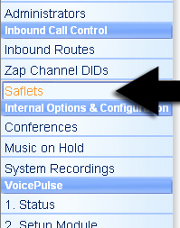
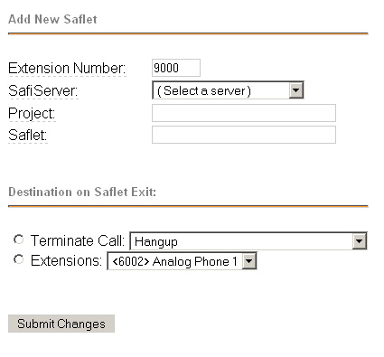
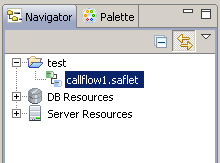
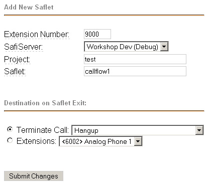

Setting up FreePBX Module
This is a guide on setting up an extension in FreePBX using the SafiServer FreePBX Module. If you have FreePBX but don't have the SafiServer FreePBX Module, you can download it here: http://sourceforge.net/projects/safiserverfreep/ .
This walk through assumes that you've set up the SafiServer connection. For help with this, see this forum post
First, navigate the the FreePBX select the Saflets option in the left menu:

Select Add Saflet in the right menu and you should see the following form:

You can change to Extension Number to any valid extension (or leave the default)
In the SafiServer dropdown, select the server you want to use for this Saflet (this can be either a Production SafiServer of the Debug SafiServer inside the SafiWorkshop).
The Project and Saflet correspond to the project and Saflet created in SafiWorkshop. In this example:

The Project would be test and the Saflet would be callflow1 (NOTE: if the Saflet was commited to a production SafiServer this value is the name set during the commit process. This name defaults to the name of the Saflet without the .saflet extension; but it can be changed when committing)
The section entitled: Destination on Saflet Exit is for handling after the end of the Saflet has been reached.
Here's an example form filled out:

Press Submit Changes to save this extension. Then press the Apply Configuration Changes link to reload Asterisk.
Now any calls to the set extension will initiate the Saflet entered (in the project and server selected).